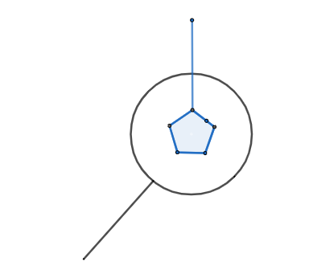

Linear connections
Also called affine connections, covariant derivative, covariant derivative operator.
General framework
An affine connection on a manifold $M$ is a vector bundle connection on the tangent bundle of M. Equivalently, it is a principal connection on the frame bundle (which is a principal bundle) of $M$. This equivalence is due to this.
Let's call $P$ to the frame bundle and $\omega$ to the connection 1-form of this connection. What is a vector $v\in T_pP$? The point $p\in P$ represents a point $x$ in the manifold together with a choice of a basis for $T_x M$, and $v$ represents the beginning of a curve $\alpha$ leaving $x$ and a choice of a basis for every $T_{\alpha(t)}M$. The value of $\omega_p(v)$ tells us how the basis is changing (if it is the case) when we move along $\alpha$. This is "not natural" to $M$, and must be introduced by hand. This "change" is infinitesimal, since it correspond to an infinitesimal step along $\alpha$, so it is measured by an element of $\mathfrak{gl}(n)$. See Cartan geometry#Generalization of manifolds with affine connections for more info about "the big picture".
Motivational introduction
Consider first the situation in $\mathbb{R}^n$. Let $X,Y \colon \mathbb{R}^n \rightarrow \mathbb{R}^n$ be vector fields. To define the directional derivative of the vector field $X$ in the direction of the vector field $Y$ at a point $p \in \mathbb{R}^n$, we can mimic usual definition of directional derivative:
$$ (\nabla_Y X)(p) := \lim_{t \to 0} \frac{X(p + tY(p)) - X(p)}{t}. $$
The result $(\nabla_Y X)$ is a vector field on $\mathbb{R}^n$. You can check that the operation $\nabla$ defined as above satisfies the following two properties:
1. $\nabla_{fY}(X) = f\nabla_Y X$.
2. $\nabla_Y(fX) = (Yf)X + f\nabla_YX$.
Here, $X,Y \colon \mathbb{R}^n \rightarrow \mathbb{R}^n$ are vector fields and $f \colon \mathbb{R}^n \rightarrow \mathbb{R}$ is a scalar function. The function $Yf$ (at a point $p$) is the directional derivative of $f$ at $p$ in the direction $Y(p)$.
Now let us try and mimic the above construction on a general manifold. Given vector fields $X,Y \in \mathfrak{X}(M)$, we try to use the same formula and define
$$ (\nabla_Y X)(p) := \lim_{t \to 0} \frac{X(p + tY(p)) - X(p)}{t}. $$However, we see that there are two problems. First, the expression $X(p + tY(p))$ is not defined because we don't have a way of adding a point $p \in M$ to a tangent vector $tY(p) \in T_pM$. This is not so bad because we can actually replace the expression $p + tY(p)$ with any curve "which goes in the direction $Y(p)$" such as the flow $\varphi_t^Y(p)$. The more serious problem is that we need to subtract the tangent vector $X(p) \in T_pM$ from the tangent vector $X(\varphi_t^Y(p)) \in T_{\varphi_t^Y(p)}$ and those are two tangent vectors that belong to different vector spaces.
In general, without any extra data, we have no way of identifying tangent spaces at different points of $M$.
To summarise, we see that we can differentiate vector fields along vector fields without any problem on $\mathbb{R}^n$ but we encounter problems when we try and do it on a general manifold. But $\mathbb{R}^n$ is also a manifold so what makes it special? We need extra data.
The definition of an affine connection is meant to supply the manifold $M$ "externally" with an operation $\nabla \colon \mathfrak{X}(M) \times \mathfrak{X}(M) \rightarrow \mathfrak{X}(M)$ which satisfies properties $(1)-(2)$ and so allows us to differentiate vector fields along vector fields. That is, instead of defining the directional derivative of a vector field along a vector field, we require that somebody handles us a mechanism $\nabla$ which satisfies the properties that the familiar derivative satisfied on $\mathbb{R}^n$ and then we will think of it as a directional derivative.
How to get one?
This extra data could be provided:
- externally
- by a parallel transport.
- Or it can be inherited from the ambient (for example if the manifold is immersed in $\mathbb{R}^N$). Covariant derivative operator on surfaces can be seen like inherited from the absolute parallelism of $\mathbb{R}^3$ and the metric of $\mathbb{R}^3$:
where $\mathcal{P}$ is the projection into the surface along its normal $\mathbf{n}$.
Definition as operator
(See relationship parallel transport, covariant derivatives and metrics).
We call covariant derivative operator or affine connection or linear connection to an operator $\nabla \colon \mathfrak{X}(M) \times \mathfrak{X}(M) \rightarrow \mathfrak{X}(M)$, where $\mathfrak{X}(M)$ is the set of all vector fields in $M$, satisfying:
1. Commute with addition.
2. Leibniz rule.
3. Tensorial with respect to the first $\mathfrak{X}(M)$.
4. Commute with index contraction.
5. Applied to scalar fields, coincides with directional derivative respect to the vector.
6. For scalar fields we have commutation: $\nabla _ { a } \nabla _ { b } \alpha = \nabla _ { b } \nabla _ { a } \alpha$.
Obviously this raises quite a lot of questions:
1. Does such mechanism always exists? (Yes).
2. It it unique? (No).
3. Is there a natural choice of such differentiation mechanism? (Yes, under certain circumstances).
4. Can we use this mechanism to recover the ability to identify tangent vectors at different points that was necessary to define the regular directional derivative in $\mathbb{R}^n$? (Yes, at least along curves. This leads to the notion of parallel transport).
In this context, we call covariant derivative to the result
$$ (\nabla_X Y)(p) $$This result depends on the values of the vector field $X$ in a neighbourhood of $p$, but only on the specific vector $Y(p)$, since it is linear in this argument (property 3 above). The Lie derivative of vector fields, on the contrary, depends on the values of $X$ in a neighbourhood. See the relation of Lie derivative, covariant derivative and torsion.
Proof
The value of $\nabla_XY$ depends only on the values of $X$ and $Y$ in a neighborhood $U$ of $p$, so you can write in a local frame $X=X^iE_i$ such that $X^i(p)=0$, then as you said :
$$\nabla_XZ=X^i\nabla_{E_i}Z$$
So evaluating in $p$ :
$$ \nabla_XZ|_p=X^i(p)\nabla_{E_i}Z|_p $$which only depends of the value of $X$ at $p$.
$\blacksquare$
If we perform this construction not on $TM$ but in any vector bundle $E\to M$ we obtain the notion of vector bundle connection, which is a particular case of a connection on a fiber bundle.
According to the following example, to specify a covariant derivative operator we only need to fix a coordinate chart $\{x_i\}$ of $TM$ and provide the functions $\Gamma_{ij}^k$
$$ \nabla_{\partial_{x_i}}\partial_{x_j}=\Gamma_{ij}^k \partial_{x_k} $$which are called the Christoffel symbols.
Extension to tensors
Once we have a covariant derivative on the tangent vector fields of a manifold, it can be extended to any tensor field with the same Christoffel symbols. In this video is explained how can be computed the covariant derivative of 1-forms, and in this part of the same video it is applied to any tensor.
For example, given the vector $v=v^i e_i$, the 1-form $\alpha=\alpha_i \epsilon^i$ and the (0,2)-tensor $g=g_{ij}\epsilon^i\otimes \epsilon^j$:
$$ \begin{array}{l} \nabla_{\partial_i}(\vec{v})=\left(\frac{\partial v^k}{\partial u^i}+v^j \Gamma_{i j}^k\right) \overrightarrow{e_k} \\ \nabla_{\partial_i}(\alpha)=\left(\frac{\partial \alpha_k}{\partial u^i}-\alpha_j \Gamma_{i k}^j\right) \epsilon^k \\ \nabla_{\partial_i}(g)=\left[\frac{\partial g_{r s}}{\partial u^i}-g_{k s} \Gamma_{i r}^k-g_{r k} \Gamma_{i s}^k\right]\left(\epsilon^r \otimes \epsilon^s\right) \end{array} $$Worked example
Another approach to understanding the problem is as follows:
In $\mathbb{R}^2$ with Cartesian coordinates $(x, y)$, we have a basis $\{\frac{\partial}{\partial x}, \frac{\partial}{\partial y}\}$ for the different tangent spaces. Moreover, the tangent vector $\frac{\partial}{\partial x}$ at point $P=(1,2)$ and the vector $\frac{\partial}{\partial x}$ at point $Q=(0,1)$ are "the same," in the sense that I can translate it from $P$ to $Q$. This is because we are assuming the notion of traditional parallelism in $\mathbb{R}^2$.
Now, let's consider other coordinates, for example, $(t, a)$ given by the transformation:
$$ \phi: (x, y) \to (t, a) = (x, y - x^2) $$The vector $\frac{\partial}{\partial t}$ at point $P=(1,1)$ (note that this $P$ is the same as in the previous paragraph but expressed in coordinates $(t, a)$), and the vector $\frac{\partial}{\partial t}$ at point $Q=(0,1)$ are now not the same, from the perspective of traditional parallelism in $\mathbb{R}^2$. Let's see this:
- $\frac{\partial}{\partial t}$ at $P$ can be expressed in Cartesian coordinates as
- $\frac{\partial}{\partial t}$ at $Q$ can be expressed in Cartesian coordinates as
Therefore, $\frac{\partial}{\partial t}$ is not constant, even though its components are. This implies that if we want to differentiate a vector field in this new coordinate system, we cannot simply differentiate each component. For example, the derivative of $\frac{\partial}{\partial t}$ would be 0, but we have just seen that it is not constant.
The way to fix this is to add correction terms to the traditional component-wise derivative that reflect the deformation of the axes themselves. Let's see this in the specific case of coordinates $(t, a)$ (note that for coordinates $(x, y)$, it would be sufficient to differentiate each component because we assume that the basis vectors are constant):
Consider the vector field $X = F_X \frac{\partial}{\partial t} + G_X \frac{\partial}{\partial a}$ and the field $Y = F_Y \frac{\partial}{\partial t} + G_Y \frac{\partial}{\partial a}$. A consistent way to differentiate $Y$ with respect to $X$ would be an operation $\nabla$ that should satisfy:
$$ \nabla_X Y = F_X \frac{\partial}{\partial t}(Y) + G_X \frac{\partial}{\partial a}(Y) = $$ $$ = F_X \frac{\partial}{\partial t}(F_Y \frac{\partial}{\partial t} + G_Y \frac{\partial}{\partial a}) + G_X \frac{\partial}{\partial a}(F_Y \frac{\partial}{\partial t} + G_Y \frac{\partial}{\partial a}) $$Since the Leibniz rule should also hold for vectors, the above expression becomes:
$$ F_X \frac{\partial}{\partial t}(F_Y) \frac{\partial}{\partial t} + F_X F_Y \frac{\partial}{\partial t}(\frac{\partial}{\partial t}) + $$ $$ + F_X \frac{\partial}{\partial t}(G_Y) \frac{\partial}{\partial a} + F_X G_Y \frac{\partial}{\partial t}(\frac{\partial}{\partial a}) + $$ $$ + G_X \frac{\partial}{\partial a}(F_Y) \frac{\partial}{\partial t} + G_X F_Y \frac{\partial}{\partial a}(\frac{\partial}{\partial t}) + $$ $$ + G_X \frac{\partial}{\partial a}(G_Y) \frac{\partial}{\partial a} + G_X G_Y \frac{\partial}{\partial a}(\frac{\partial}{\partial a}) = $$ $$ = X(F_Y) \frac{\partial}{\partial t} + X(G_Y) \frac{\partial}{\partial a} + \textrm{correction terms} $$These "correction terms" will be fully determined when we calculate $\frac{\partial}{\partial t}(\frac{\partial}{\partial t})$, $\frac{\partial}{\partial t}(\frac{\partial}{\partial a})$, $\frac{\partial}{\partial a}(\frac{\partial}{\partial t})$, and $\frac{\partial}{\partial a}(\frac{\partial}{\partial a})$. Let's translate everything into Cartesian coordinates, where we can differentiate because parallelism exists.
$$ d\phi^{-1}(\frac{\partial}{\partial t})=\left( \begin{array}{cc} 1 & 0\\ 2t & 1 \\ \end{array} \right) \cdot \left( \begin{array}{c} 1 \\ 0 \\ \end{array} \right)=\frac{\partial}{\partial x}+2x \frac{\partial}{\partial y} $$ $$ d\phi^{-1}(\frac{\partial}{\partial a})=\left( \begin{array}{cc} 1 & 0\\ 2t & 1 \\ \end{array} \right) \cdot \left( \begin{array}{c} 0 \\ 1 \\ \end{array} \right)=\frac{\partial}{\partial y} $$Therefore:
- $\frac{\partial}{\partial t}(\frac{\partial}{\partial t})=(\frac{\partial}{\partial x}+2x \frac{\partial}{\partial y})(\frac{\partial}{\partial x}+2x \frac{\partial}{\partial y})=2\frac{\partial}{\partial y}=2\frac{\partial}{\partial a}$
- $\frac{\partial}{\partial t}(\frac{\partial}{\partial a})=(\frac{\partial}{\partial x}+2x \frac{\partial}{\partial y})(\frac{\partial}{\partial y})=0$
- $\frac{\partial}{\partial a}(\frac{\partial}{\partial t})=\frac{\partial}{\partial y}(\frac{\partial}{\partial x}+2x \frac{\partial}{\partial y})=0$
- $\frac{\partial}{\partial a}(\frac{\partial}{\partial a})=\frac{\partial}{\partial y}(\frac{\partial}{\partial y})=0$
Thus, the "differentiation" becomes:
$$ \nabla_X Y = X(F_Y) \frac{\partial}{\partial t} + X(G_Y) \frac{\partial}{\partial a} + 2 F_X F_Y\frac{\partial}{\partial a} $$The components of $\frac{\partial}{\partial t}(\frac{\partial}{\partial t})$, $\frac{\partial}{\partial t}(\frac{\partial}{\partial a})$, $\frac{\partial}{\partial a}(\frac{\partial}{\partial t})$, and $\frac{\partial}{\partial a}(\frac{\partial}{\partial a})$ in the basis $\left< \frac{\partial}{\partial t}, \frac{\partial}{\partial t} \right>$ are called Christoffel symbols and depend on the notion of parallelism and the chosen coordinates. They are symbolized by $\Gamma_{ij}^k$, and in our case, $\Gamma_{11}^2=2$, and all others are 0.
Abstract Index Notation
This whole approach can be given using Penrose abstract index notation. In this notation, we would denote:
$$ \xi^c \nabla_c \Psi^a = \nabla_{\xi} \Psi $$In Penrose notation, it becomes:

And, for example, the Leibniz rule (and more):

Ultimately, a connection will determine a way to identify tangent vectors at one point $p\in M$ with those at another point $q\in M$, although it will depend on the curve connecting them (parallel transport).
________________________________________
________________________________________
________________________________________
Author of the notes: Antonio J. Pan-Collantes
INDEX: